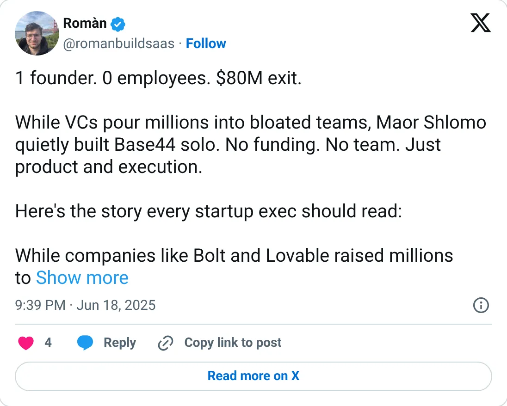
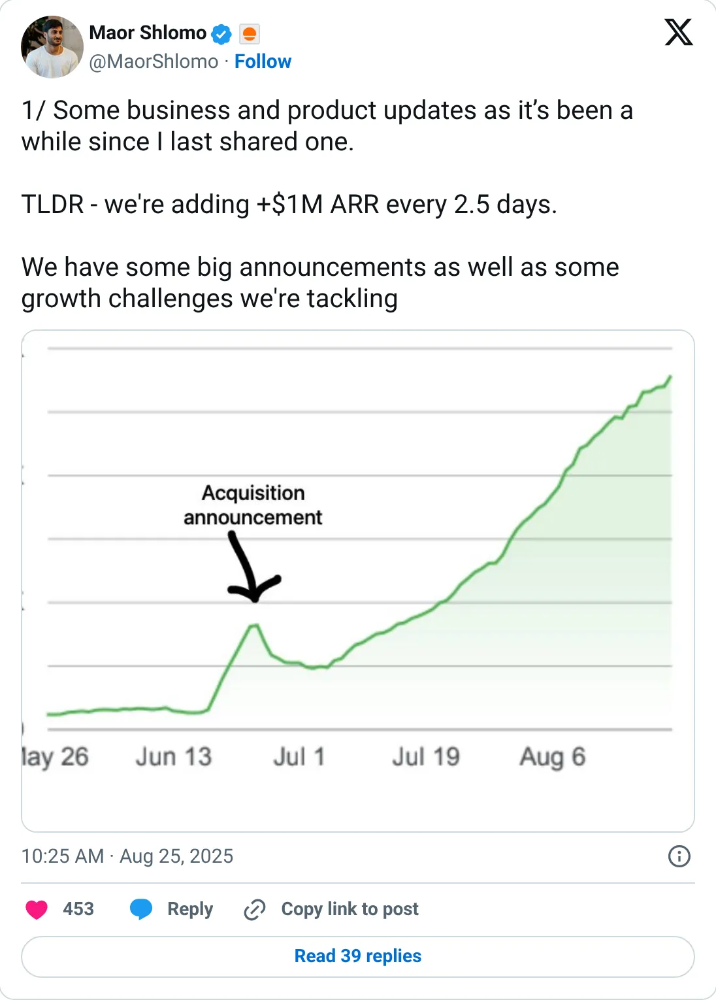

Not a pick
Base44
A real-looking company with a headline you should not plan against.
Acquired by Wix for $80M cash (Jun 2025)
Should you build this
The company may be real. The figure on the card is a peak, a stale year, a cash month, or an average. Base44's headline is not MRR. It is an acquisition: Wix, $80M cash, about six months in, reported in June 2025, with a third-party note of 250K users and $189K of profit in the prior month. This report never gets a founder-stated ARR for the period that was sold. After the deal, the founder said the product was adding $1M of ARR every 2.5 days, and later cited 2M users and 1,000 new paying subs in a day. That velocity is a victory lap, not an operating metric. Take the reported sale price as a reported sale price. There is no revenue figure here to trust.
Cited from the captured posts, shown below: the earliest captured post (Jun 18, 2025) is the source for “Solo, bootstrapped; acquired by Wix for $80M about 6 months in (reported)”; the latest milestone (Aug 25, 2025) is the source for “Founder: adding +$1M ARR every 2.5 days”.
Posts this is based on

Solo, bootstrapped; acquired by Wix for $80M about 6 months in (reported)
Open on X

Founder: adding +$1M ARR every 2.5 days
Open on X
What the product is
Vibe-coding platform: describe an app in plain language and get a working full-stack app with database, auth and hosting.
⚠ Exited: acquired by Wix. No founder-stated absolute ARR; there's only a third-party profit figure.